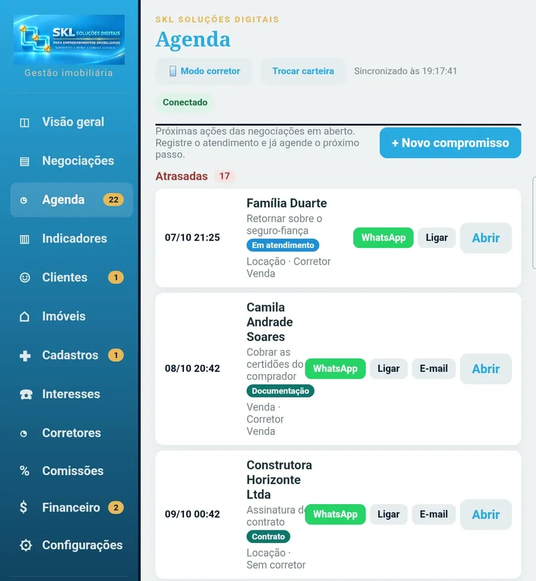
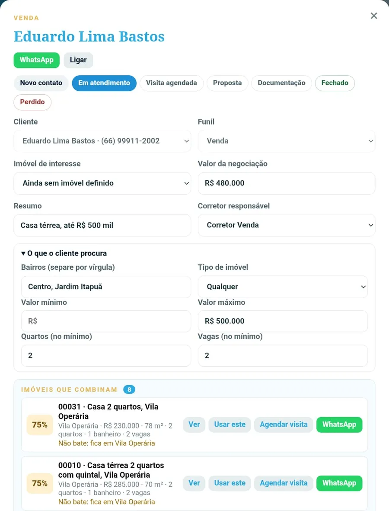
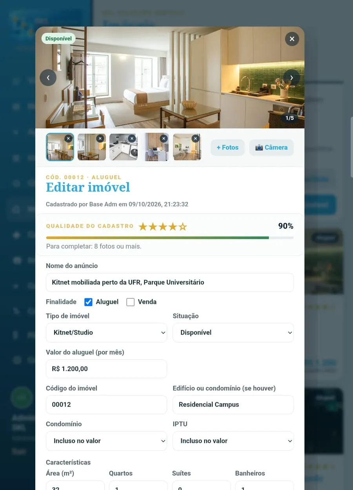
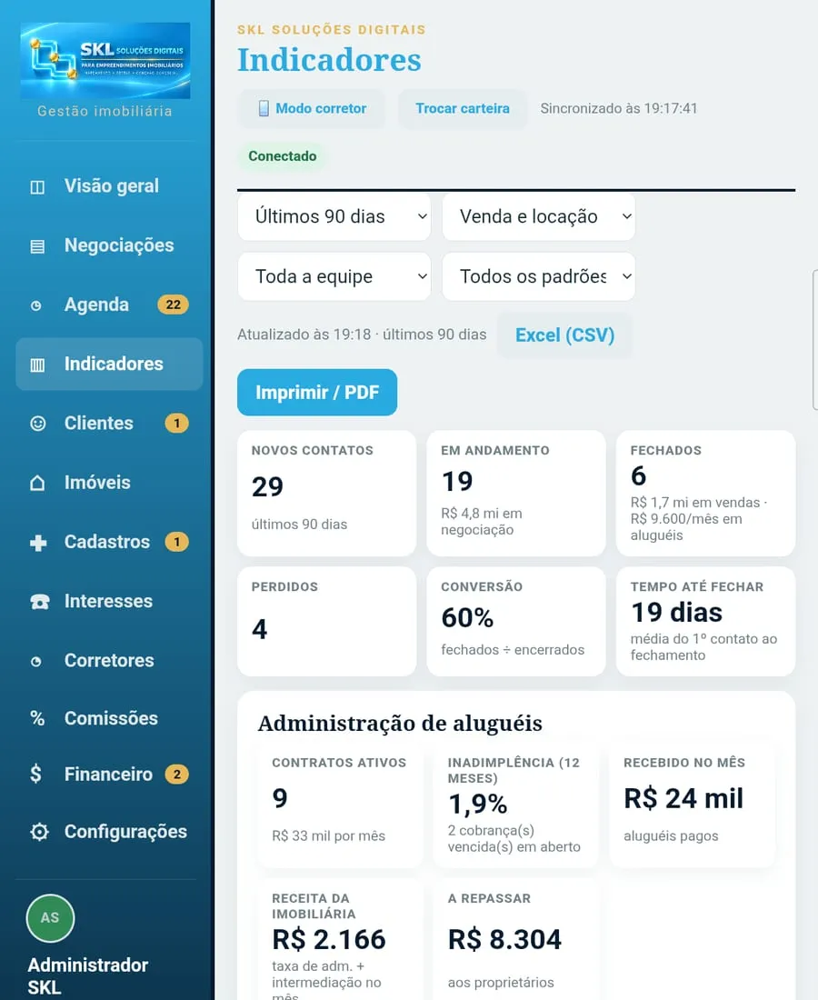
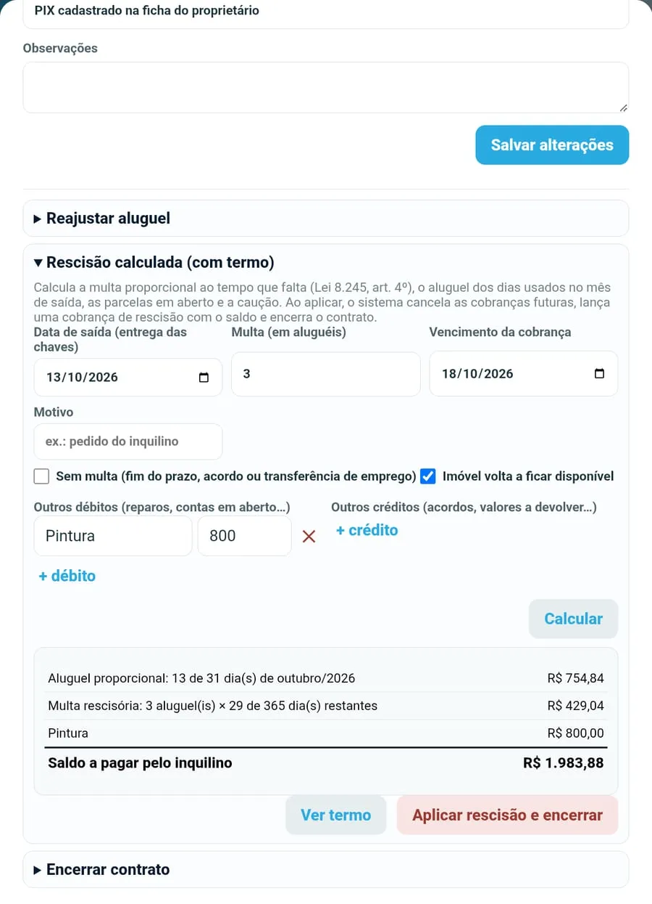
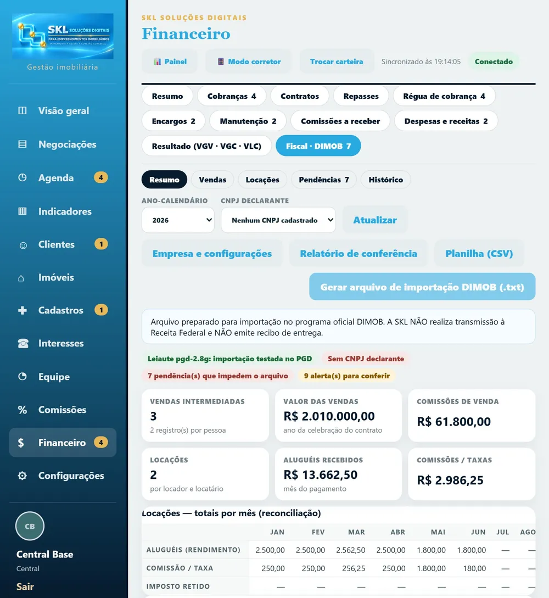
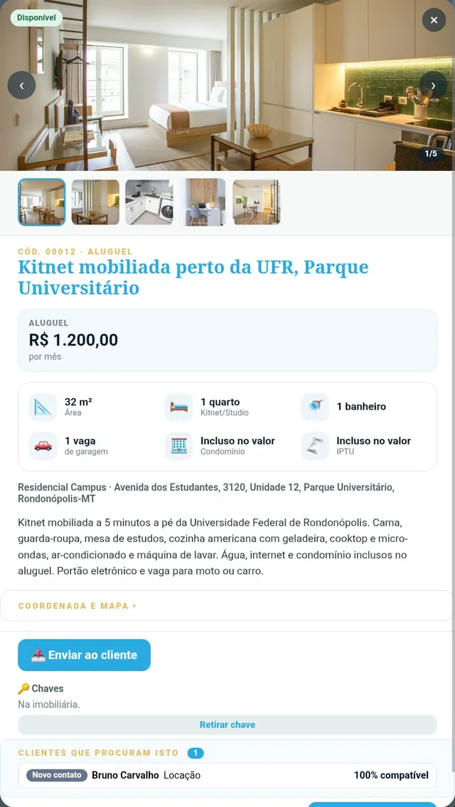
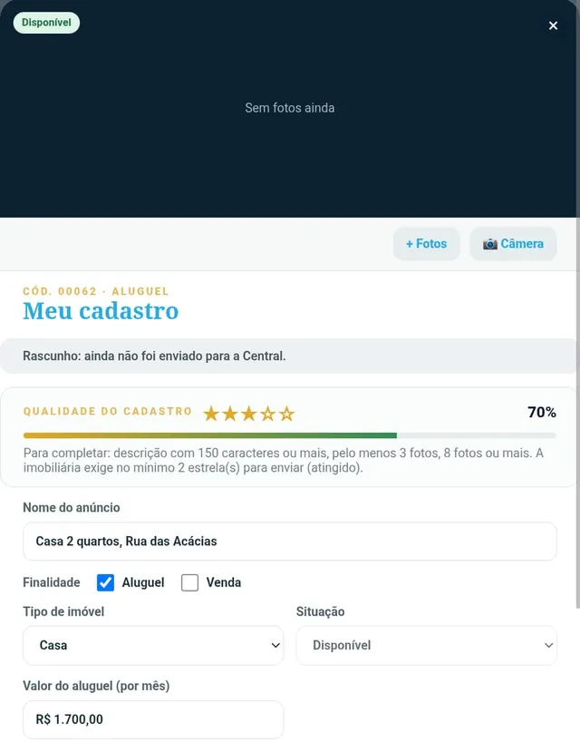
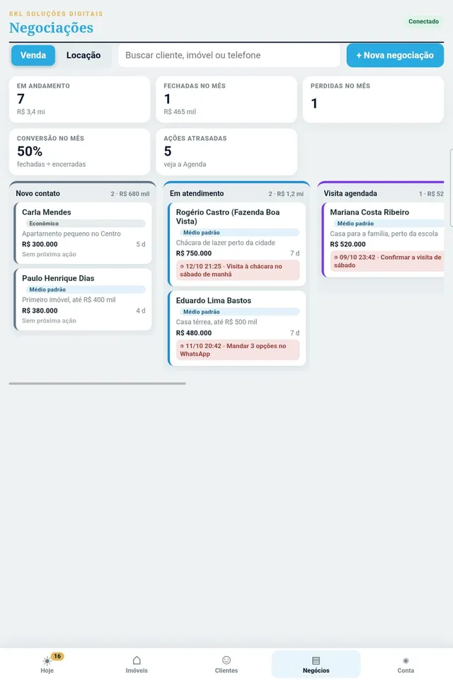
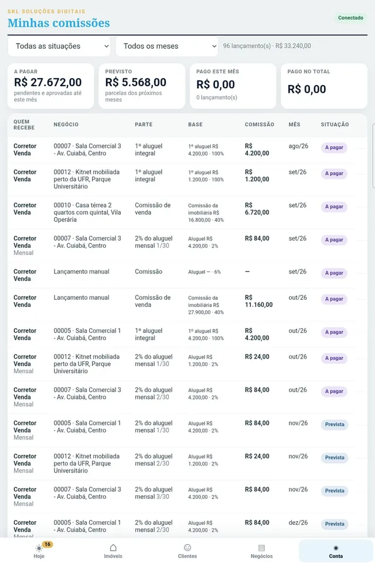

CRM de venda, locação e captação
Negociações em funil ou em quadro, com meta de conversão por etapa, próxima ação de cada cliente, agenda, visitas, roleta de contatos e pós-venda.
SKL Soluções Digitais›Gestão imobiliária
Gestão imobiliáriaPara a imobiliária que vende e aluga: clientes, negociações, agenda, imóveis, administração dos aluguéis e app do corretor no mesmo acesso — sem planilha e sem painel externo.
Negociações em funil ou em quadro, com meta de conversão por etapa, próxima ação de cada cliente, agenda, visitas, roleta de contatos e pós-venda.
Carteira com fotos e mapa, nota de qualidade do anúncio e captação feita pelo corretor, aprovada pela Central.
Fazendas, sítios e chácaras com área em hectares ou alqueires, perímetro do arquivo KML/KMZ no mapa, benfeitorias e documentos como matrícula, CAR e CCIR.
Cobranças mensais com multa e juros, recibo, reajuste e alerta de contratos terminando.
Repasse já com a taxa de administração descontada, demonstrativo e informe de rendimentos.
Quem avisar hoje: vence em breve, vence hoje ou atrasado, com a mensagem pronta para WhatsApp ou e-mail.
Encargos (IPTU, condomínio, seguro), chamados de manutenção com fotos, vistoria e rescisão calculada com termo.
VGV, comissões, vencimentos do mês, metas por trimestre, contas a receber e a pagar e o segmento que mais fecha, numa tela só.
Ficha fiscal de cada venda e locação, lista do que falta corrigir e arquivo para importar no programa oficial da Receita. A entrega continua com o contador.


Telas reais do sistema, com dados de demonstração. Toque em qualquer uma para ampliar.

Os números do mês, do trimestre ou do ano: VGV, comissões, vencimentos, metas e o que está para receber ou pagar.

Retornos atrasados e do dia, com WhatsApp, ligação e e-mail a um toque, e a etapa de cada negociação.

O perfil do cliente (bairros, valor, quartos) e a lista dos imóveis da carteira que combinam, em porcentagem.

Todos os imóveis no mapa da cidade, com os mesmos filtros da lista: finalidade, situação, bairro e faixa de valor.

Fotos, valores, condomínio e IPTU, características e a nota de qualidade, que mostra o que falta para o anúncio ficar completo.
Busca separada entre urbanos e rurais, com área na unidade que o mercado usa e as benfeitorias de cada propriedade.

Contatos, conversão, tempo até fechar, origem dos clientes e números da administração de aluguéis.
Cobranças, contratos e repasses, com o que está a receber, recebido, em atraso e a repassar.
Quem avisar hoje, com o valor atualizado e a mensagem pronta para WhatsApp ou e-mail.
Cada problema do imóvel alugado com responsável, prazo, custo, fotos e histórico.

Multa proporcional, aluguel do mês de saída e créditos calculados, com o termo em PDF.

Junta as vendas e locações do ano, aponta o que falta e gera o arquivo para o contador importar no programa da Receita.
Atalhos, avisos e os retornos do dia, assim que ele abre o app.
A carteira com fotos, valores e filtros, e os que combinam com o perfil dele primeiro.

Fotos em tela cheia, valores, características, localização e os clientes que combinam.
Mensagem pronta para o WhatsApp, com link de fotos e valores e sem dados do proprietário.
Fotos, valor, área e benfeitorias, com a troca de hectare para alqueire na hora.

O corretor cadastra o imóvel com fotos pela câmera e envia para a Central aprovar.

As negociações dele por etapa, com a próxima ação de cada uma.

O que ele tem a receber, o previsto e o que já foi pago, negócio por negócio.
Sim. Há funis separados para venda, locação e captação (vistos juntos ou um a um), e os imóveis podem ser para venda, locação ou os dois.
Sim. Fazendas, sítios, chácaras e áreas rurais têm cadastro próprio: área em hectares ou alqueires, perímetro importado de arquivo KML ou KMZ, benfeitorias e documentos do imóvel.
Não transmite. Ele organiza as vendas e locações do ano, aponta o que falta (como CPF ou endereço do imóvel) e gera o arquivo para importar no programa oficial da Receita; a entrega é feita pelo contador.
Não. O corretor vê só os próprios clientes e negócios; a Central, o gestor e o administrador veem tudo. As permissões ficam no servidor.
O pagamento é registrado pela equipe, com multa e juros calculados. A emissão automática de boleto ou Pix com baixa bancária depende de integração com banco, orçada à parte.
Não. O corretor pode informar o proprietário ao cadastrar uma captação, mas depois de aprovado esse dado fica só com a Central.
Agende uma demonstração ao vivo, com o aplicativo em funcionamento, e receba uma proposta sob medida para a sua operação.